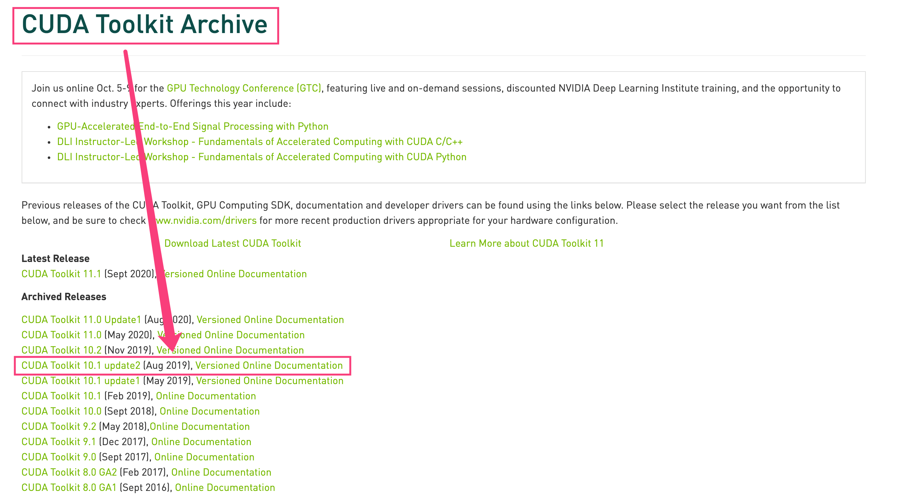
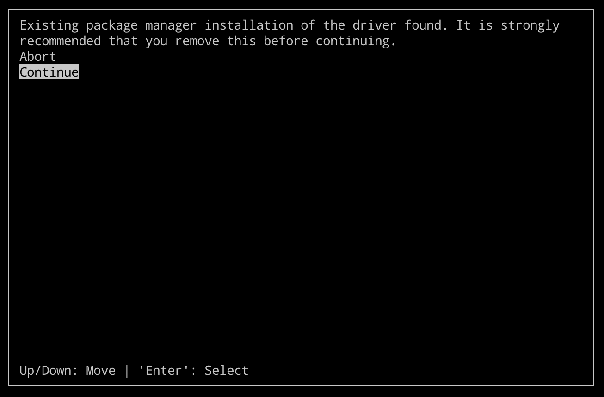
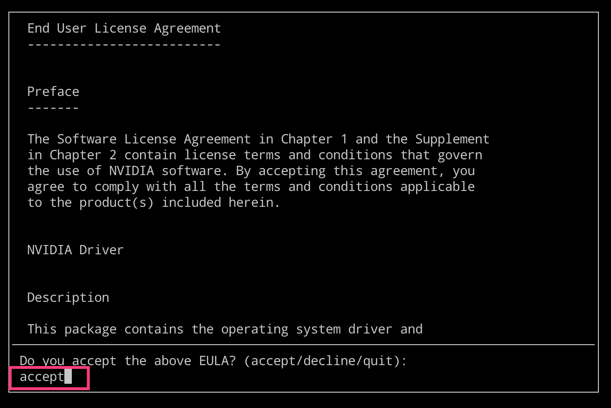
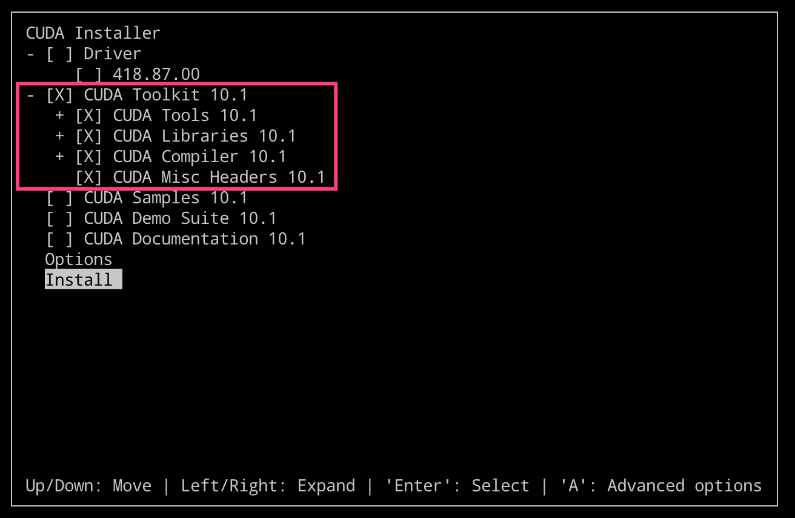

CUDA 是 NVIDIA 发明的一种并行计算平台和编程模型，它通过利用图形处理器(GPU)的处理能力，可大幅提升计算性能。
CUDA 是 Nvidia 推出的只能用于自家 GPU 的并行计算框架。只有安装这个框架才能够进行复杂的并行计算。主流的深度学习框架也都是基于 CUDA 进行 GPU 并行加速的，几乎无一例外。还有一个叫做 cudnn，是针对深度卷积神经网络的加速库。
1. 多版本共存
多版本共存即系统中可以存在多个版本可供选择使用
今天发现我们程序使用
TF的代码需要使用cuda10.1的版本，但是操作系统已经安装的并没有提供对应的版本。现在的解决方法就是使用在本机系统安装或者使用对应版本的docker镜像来安装，但是由于环境时使用源码部署的，所以使用docker镜像来安装需要对应的适配，最终选择本机安装。但是如果直接使用命令安装的话，改变已有的环境CUDA有可能会影响本机的其他环境，所以决定使用runfile的安装方式，实现CUDA多版本共存和实时切换。首先，我们需要在官方的
CUDA版本库中选择自己需要的CUDA版本对应的安装包，这里我们选择runfile类型的安装文件进行安装。对应的 官网地址 在这里，点击进入之后如下图所示。


- 我们执行对应的下载安装操作命令之后，会在
/usr/local/目录下生成一个cuda-10.1的目录文件夹。- 10.1.243 => 代表 cuda 的版本
- 418.87.00 => 代表的对应的 NVIDIA 驱动的版本
# 下载对应版本文件
$ wget http://developer.download.nvidia.com/compute/cuda/10.1/Prod/local_installers/ \
cuda_10.1.243_418.87.00_linux.run
# 执行安装操作
$ sudo sh cuda_10.1.243_418.87.00_linux.run
- 执行上述安装操作后，稍等一会儿将会出现如下所示的提示信息，我们根据自己的实际需求进行选择。



- 接下来我们选择最下方的
install即可开始安装了。但是需要注意的是，Toolkit对应的路径在/usr/local/下面。安装过程需要选择是否建立软链接时，如果是第一次安装cuda则选择y，如果是安装额外版本的cuda则选择n，具体选择根据需求而定。
# 建立软链接
# 我们这里多版本共存，所以选择n即可
Do you want to install a symbolic link at /usr/local/cuda?
(y)es/(n)o/(q)uit: n
# 如果选择了y，会出现如下所示的情况
$ ls -lh /usr/local
lrwxrwxrwx 1 root root 19 Jul 15 2018 cuda -> /usr/local/cuda-10.1/
drwxr-xr-x 19 root root 4.0K Jun 5 2019 cuda-10.0/
drwxr-xr-x 14 root root 4.0K Sep 21 22:54 cuda-10.1/
......
- 安装完成之后，最后会输出提示让我们设置环境变量和对应的，设置之后即可使用了。需要注意的是，我们这是通过
LD_LIBRARY_PATH变量来控制，坑少点。
export LD_LIBRARY_PATH=$LD_LIBRARY_PATH:/usr/local/cuda/lib64
export PATH=$PATH:/usr/local/cuda/bin
export CUDA_HOME=$CUDA_HOME:/usr/local/cuda
root@localhost:/usr/local# sh cuda_10.1.243_418.87.00_linux.run
===========
= Summary =
===========
Driver: Not Selected
Toolkit: Installed in /usr/local/cuda-10.1/
Samples: Not Selected
Please make sure that
- PATH includes /usr/local/cuda-10.1/bin
- LD_LIBRARY_PATH includes /usr/local/cuda-10.1/lib64, or, add /usr/local/cuda-10.1/lib64 to /etc/ld.so.conf and run ldconfig as root
To uninstall the CUDA Toolkit, run cuda-uninstaller in /usr/local/cuda-10.1/bin
Please see CUDA_Installation_Guide_Linux.pdf in /usr/local/cuda-10.1/doc/pdf for detailed information on setting up CUDA.
Logfile is /var/log/cuda-installer.log
2. 多版本切换
主要是使用软链接达到多版本切换的
- 所谓多版本切换，就是通过软链接来实现的。安装多个
cuda版后，默认存储在/usr/local目录下面。如下图所示，我们看到cuda只是一个软链接，它指向我们指定的cuda版本。这样的处理方式，我们常常会在前几年看到，主要是为了平滑升级。即使用的是cuda而不是cuda-10.0或cuda-10.1这个样子。
# 软链接方式
$ ls -lh /usr/local
lrwxrwxrwx 1 root root 19 Jul 15 2018 cuda -> /usr/local/cuda-10.1/
drwxr-xr-x 19 root root 4.0K Jun 5 2019 cuda-10.0/
drwxr-xr-x 14 root root 4.0K Sep 21 22:54 cuda-10.1/
......
# 需要切换版本时，执行如下操作
$ sudo rm -rf /usr/local/cuda
$ sudo ln -s /usr/local/cuda-10.0 /usr/local/cuda
3. 注意事项
主要记录 Ubuntu 系统中安装 CUDA 的相关注意事项
- 我们上面的所有步骤和方法都是使用官方提供的
.run包单独安装cuda服务的，当然我们还可以使用apt源自带的软件包来安装，这样更新更加便捷和快速。==> 官方提供的run包下载速度感人- 有外网的服务器上面我们就直接使用
apt来安装 - 在内网的服务器上面我们就直接使用
.run来安装
- 有外网的服务器上面我们就直接使用
$ ubuntu-drivers devices
apt install nvidia-340 # version 340.108-0ubuntu2, or
apt install nvidia-utils-435 # version 435.21-0ubuntu7
apt install nvidia-utils-390 # version 390.138-0ubuntu0.20.04.1
apt install nvidia-utils-450 # version 450.80.02-0ubuntu0.20.04.2
apt install nvidia-utils-450-server # version 450.80.02-0ubuntu0.20.04.3
apt install nvidia-utils-440 # version 440.100-0ubuntu0.20.04.1
apt install nvidia-utils-418-server # version 418.152.00-0ubuntu0.20.04.1
apt install nvidia-utils-440-server # version 440.95.01-0ubuntu0.20.04.1
- 如果我们使用
apt的方式安装了nvidia驱动，优先用aliyun源上的驱动来装，并且禁掉自动更新。
# 禁掉自动更新
$ systemctl stop apt-daily.timer
$ systemctl mask apt-daily.timer